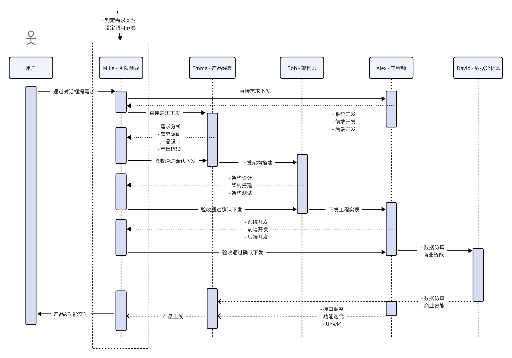

（一）以CRM System made by c3.7s为case分析用户体验/Agent对话设计上的不足之处
1. 总体工作流存在优化空间
通过这一个用例，在对话上展现的工作流如下。容易发现，存在反复的Agent实现结果由Leader Agent来验收，然后从这里继续下发任务。这样的环节看起能确保更好的自动化，但实际上流程较慢，而且增加了Agent调用，消耗用户的积分和token，容易造成不良体验

修改建议是：理想情况下，team leader在拆解用户需求之后，其余的Agent直接根据拆解的分阶段任务去执行，无需再重复由team leader验收后下发任务。据此可以减少重复调用，同时提速开发工作流
2. 每次对话积分对应token使用数量不明，严重影响使用体验
首先，对话框这里告诉我们不同模型的收费不同

但是这里没有给用户透出不同LLM大致的定价及对应积分消耗。用户至始至终都不知道积分消耗是依据什么来定的，以及单次对话或者是单个需求提出会消耗多少积分（虽然HR在与我沟通时提到每天5次的免费额度，但我也产生了误解，认为是5次对话额度）。这会造成两个结果：
具体来看问题的表现。针对这个Remix，我分别提出了两个不同难度等级的需求：
细节的问题点及优化建议：
3. Agent对话框相关设计
4. 首页团队模式不同Agent的用途介绍无需做成鼠标悬停提示，可以直接展出
进入MGX后选择“团队模式”，可以直接将团队角色及功能展出，清晰功能边界，引导用户选择体验而不是设计为悬停。
5. 部分导航栏内容及整体产品模块设计可优化调整
（二）从用户使用旅程来谈困惑点
用户旅程
困惑点一：团队&工程师模式设计的原因
首先，这个模式的含义没有非常明确的介绍，第一时间对我而言增加了隐形的选择负担，这让我比较困惑。
稍微思考后，个人理解这个模式最大的商业价值在于分别针对“个人开发者”和“企业级用户”提供了自建Demo的途径，方便做商业拓展。但又觉得MGX在迎来大规模的商务拓展之前，早期的用户拓展阶段目标应该更多放在赋能个人开发者，至于企业级用户市场是需要足够的个人用户作为流量来论证MGX的价值之后才能进一步拓展的。
个人认为个人开发者对于ta所使用的Agent产品在ta自己整个产品开发中的角色其实并不特别关心。多数有意愿、有想法通过MGX开发产品demo的人是带着需求文档或者脑海中的原型来开发的。背后的理由比较显见：一方面因为目前在MGX上用多轮逐步对话的方式找出产品大纲过于昂贵，另一方面vibe coding的群体更多集中在“有创造力但欠缺足够代码力”的人群，这部分人群不会对自己的产品设计没有想法。
我认为MGX并不需要在这里提供给用户一个选择：团队还是工程师模式。当然，这种团队和个人工程师的分类在进入到开发之后或许值得需要保留，因为用户会希望在每次需求的细节调整上精准到调用哪一个Agent。后来又思考，会不会设计了工程师和团队两个模式是为了凸显出MGX在产品设计、架构搭建、数据仿真上的能力？但是在对比使用中感受也不明显。因此总体上还是比较困惑。
困惑点二：计划器的设置用途不明
在具体的项目中存在计划器的设置。我理解，计划器的设置是为了方便进行项目管理，确保Agent真正完成了用户下发的指令任务而不是创造幻觉。但从产品的角度来说，计划器最重要的使用场景应该是提供类似Manus那样离线/关闭浏览器下运行的项目进程管理能力。而这一能力在MGX的使用过程中我作为用户没有感知，不确定是否具备。因此从产品设计角度我对计划器的价值表示有些困惑。